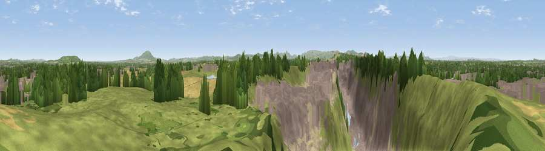

Viewpoint near Bayston Hill
#9721 in England · top 32% of its area beats it · near Bayston HillWhere it is
The exact computed spot (SJ 50125 09825). Click the marker for map links.
The view, rendered

A 360° render of this exact spot computed from the terrain model, tree cover and land cover — summer colours, afternoon light, calibrated against photographs of famous viewpoints. Real trees, hedges and buildings will differ in detail.
The panorama
Grey silhouette: terrain skyline in each direction (720 bearings, Earth curvature and refraction included). Dashed green: skyline with trees (+15 m) and buildings (+8 m) as obstacles. Blue strip: how far the ground is visible on each bearing.
Where the view opens
Wedge length = distance to the farthest visible ground on that bearing (vegetation-aware). Rings at 10, 25 and 50 km.
What fills the view
37% grassland · 23% built-up · 17% woodland · 12% cropland · 10% bare ground ·
Angular shares of the visible panorama (visual magnitude), not map area. Landscape diversity 0.66 (0–1 Shannon).
Key numbers
More beautiful places nearby
The staircase of upgrades: each row has a higher view potential than everything closer. Driving times are estimates from straight-line distance, calibrated against real road routing — check an actual route before setting out.
| Place | Direction | Drive | Score |
|---|---|---|---|
| Viewpoint near Bayston Hill | SW · 4 km | ~9 min | 66.1 |
| Lyth Hill | SW · 4 km | ~10 min | 66.6 |
| Viewpoint near Uffington | NE · 5 km | ~11 min | 70.6 |
| Viewpoint near Uffington | NE · 5 km | ~12 min | 71.0 |
| Broompatch | WSW · 8 km | ~16 min | 71.3 |
| Radlith | WSW · 9 km | ~18 min | 73.3 |
| Viewpoint near Acton Burnell | SSE · 9 km | ~18 min | 74.9 |
| Viewpoint near Plealey | WSW · 9 km | ~18 min | 78.0 |
52.68381, -2.73922 · source: screening · position refined by local search. Computed location — check access rights before visiting.